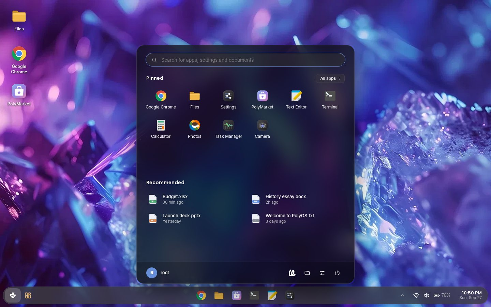
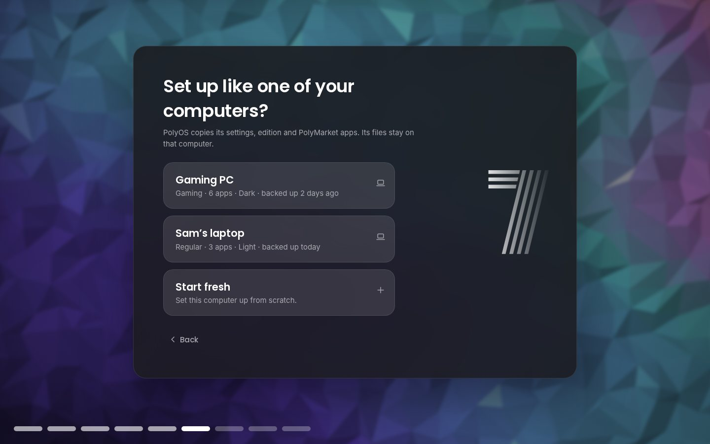

A real Start menu
Press the Windows key: search apps, settings and your files, pin what you use, browse All apps A to Z, and pick up recent files. Power, Settings and Files sit at the bottom.
PolyOS started as an operating system built in Scratch by the PIXAPoLY team. This project turns it into a real desktop that boots on your PC: the PolyOS look you know, on top of Debian's drivers, Wi-Fi, apps and security.

What's inside
Every screen follows the Scratch original: its colors, shapes and layout were measured from the PolyOS 7 costumes.
Press the Windows key: search apps, settings and your files, pin what you use, browse All apps A to Z, and pick up recent files. Power, Settings and Files sit at the bottom.
A floating taskbar, ^ for everything running (even Steam or Discord in the background), and Wi-Fi, Airplane mode, Energy saver and Night light a click away.
The PolyOS 7 lock screen with a PIN or your password, and a recovery key if you forget it.
51 trusted apps from Debian and Flathub: Discord, Spotify, Steam, VS Code, OBS and more. Google Chrome comes built in.
Drag and drop, thumbnails, search, a Trash you can restore from, and Set as wallpaper for any picture.
Plug in a monitor: Duplicate, Extend or one screen with Win+P, remembered for next time.
Personalization, your Account and PIN, Apps (installed, startup and usage), Storage, Display, Power (lid and power button), Privacy, Gaming and Updates, all in one place.
Driver Manager finds graphics, Wi-Fi and sound drivers, and firmware updates from your computer's maker.
The PolyOS assistant: ask for an app or a setting, or have it help with code and 3D models, always asking before it changes anything.
Take the tour
Real screenshots of PolyOS 1.4. Pick a part, then click through; click the big picture to see it full size.
What's new in 1.4
Install PolyOS on a new computer, connect your Poly Account, and pick one of your other computers. The new one gets its settings, edition and apps, like cloning a PC. Files stay where they are.
No files or passwords are copied. Each computer's backup (with Poly Sync on) holds only its settings, edition and app list. Every release

Editions
Pick an edition while installing. Its apps arrive by themselves, and you can add the others any time in Settings.
Everything most people need: the PolyOS desktop, Google Chrome, Files, Camera, widgets and PolyMarket.
Change PolyOS itself: any file you put in your interface folder replaces PolyOS's built-in one.
user.css restyles everythingSet up for play: Steam, Windows games with Wine, other launchers, cloud gaming and a Game Mode.
Under the hood
Debian provides the kernel, drivers, Wi-Fi, audio and apps. PolyOS provides everything you see: plain HTML, CSS and JavaScript in WebKit windows, placed by a Python shell on an Openbox desktop.
Try it
Which one? Almost every Windows PC and laptop: PC (Intel/AMD). Apple Silicon Macs (in UTM, Parallels or VMware Fusion) and ARM64 computers with UEFI: ARM64.
A fresh install. PolyOS installs on a whole drive and replaces
everything on the drive you choose, including Windows if it's there.
Keeping Windows? Get the dual-boot ISO (PC, advanced): it installs PolyOS next to Windows. Back up your files and turn off BitLocker / Device encryption and Fast Startup in Windows first.
Always the newest release. Clicking a button starts the download and shows you how to install. By downloading you accept the disclaimer.
Questions
Yes. PolyOS is free and open source (GNU GPL v3 or later). There's nothing to buy and no ads.
It replaces everything on the drive you choose, including Windows if it's on that drive. Back up your files first, or try PolyOS from the USB drive (nothing changes until you click Install) or in a virtual machine.
Yes, with the dual-boot ISO (advanced). Its installer shrinks Windows' partition or uses free space, and a boot menu lets you pick PolyOS or Windows at every start. Back up your files first, and turn off BitLocker / Device encryption and Fast Startup in Windows. The main download is a fresh install on a drive of its own.
No. PolyOS works fully without one and updates itself either way. An account adds sync, device management, account recovery and, new in 1.4, setting up a new computer like one of your others.
Settings › Updates downloads and installs new versions on your schedule. Every update is signed, and PolyOS refuses one whose signature or checksums don't match.
Most hardware works out of the box on Debian 13. Driver Manager installs NVIDIA, Broadcom Wi-Fi and other drivers and firmware, and the Gaming edition sets up Steam, Wine and cloud gaming.
PolyOS was created in Scratch by PIXAPoLY Software; this Debian edition is made by Cryptic Software with the team's blessing. It isn't affiliated with the Scratch Foundation, Debian or Microsoft. See the disclaimer.
The install guide and documentation cover most things; for anything else, write to us from Help & Support.
Timeline
Pick your own picture as the wallpaper, setup fixes from testers, and the dual-boot ISO on the Download page.
Chrome or Firefox in setup, login and lock screens on every monitor, and installing again from the USB drive fixed.
Copy another computer's settings, edition and apps while installing, and a fresh install on a drive of its own.
A Windows-style Start menu, Google Chrome, easy multiple screens, PIN sign-in, and Storage, Usage and firmware updates in Settings.
Everything is asked before installing, so PolyOS starts straight to your desktop.
Signed updates on your schedule, an optional Poly Account, and release notes in Settings › Updates.
An optional Poly Account with device management, recovery and sync; updates signed by Poly; and a new website.
Online updates from Settings, touchscreen and camera drivers, a model-aware hardware check, and a themed boot menu.
Display and Sound controls, the Apps page, true full screen, the first-start hardware check with a light mode, and a Windows Setup style drive list.
Code, OpenSCAD and Blender models, ROS 2 and Arduino, with your approval for every change; real app icons and ARM64 USB drives.
Download buttons right on this site, an install guide, and a second ISO for ARM64 computers and Apple Silicon Macs.
Regular, Developer and Gaming editions, firewall and security updates on by default, and speed tuning.
Login and lock screens redrawn from the Scratch original, the crystal wallpapers, the Camera app and desktop shortcuts.
The desktop shell, Files, Settings, the installer with its "Cryptic Software presents" intro, and a live USB built on GitHub.
PolyOS was created in Scratch by PIXAPoLY Software (scratch.mit.edu/users/PolyOS). This edition is presented by Cryptic Software, with the team's blessing.
Disclaimer. PolyOS 7 for Debian is an independent project, provided as is, without any warranty. Installing it replaces everything on the drive you choose: back up first. It isn't affiliated with or endorsed by the Scratch Foundation, Debian, Microsoft or any app maker named here; their names and trademarks belong to them. Read the full disclaimer.